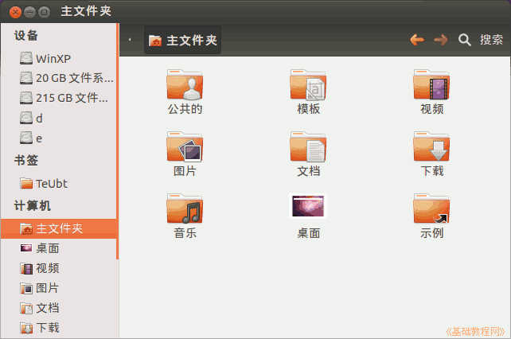
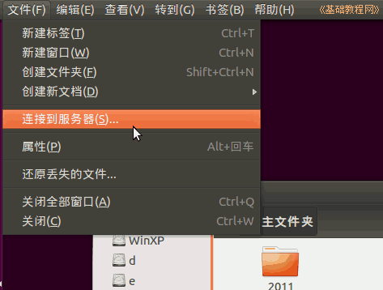
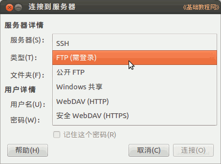
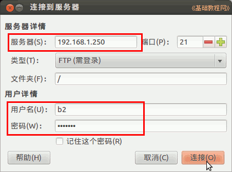
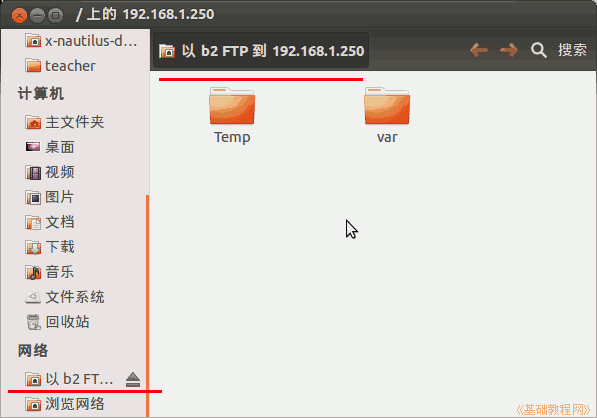

Ubuntu 入门操作指南
作者：TeliuTe 来源：基础教程网
九十一、连接到服务器 返回目录 下一课在文件管理器(Nautilus)中，可以访问FTP、SSH 或 Windows 共享；
1、连接到服务器
1）点击左侧栏的主文件夹按钮，打开主文件夹；

2）点桌面最上边的菜单栏中的“文件”菜单，选择“连接到服务器...”；

3）出来一个连接对话框，点击中间的类型下拉列表，选择“FTP(需登录)”；

4）接下来依次输入服务器地址、用户名、密码，然后点右下角的“连接”按钮；

5）稍等就可以登录到FTP服务器上，在左侧栏网络中显示一个项，可以把它添加到书签中便于下次访问；

6）接下来就跟平时文件夹操作一样，可以复制、粘贴或删除文件；
本节学习了连接到服务器的基础知识，如果你成功地完成了练习，请继续学习下一课内容；
本教程由86团学校TeliuTe制作|著作权所有
基础教程网：http://teliute.org/
美丽的校园……
转载和引用本站内容，请保留作者和本站链接。